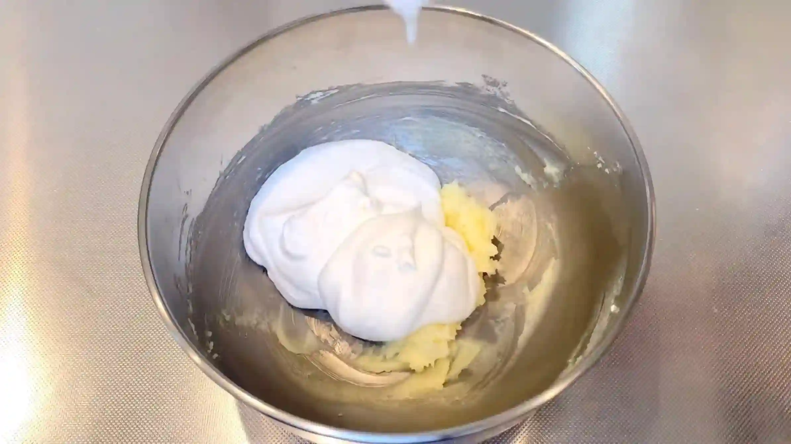
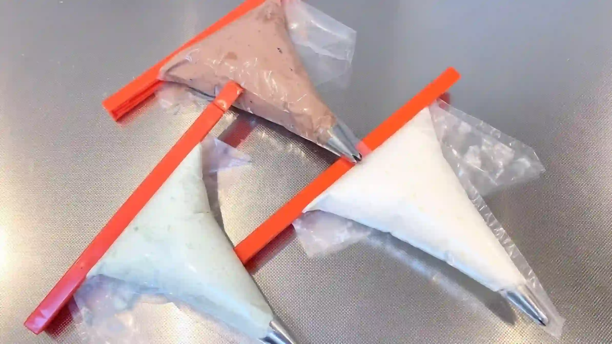
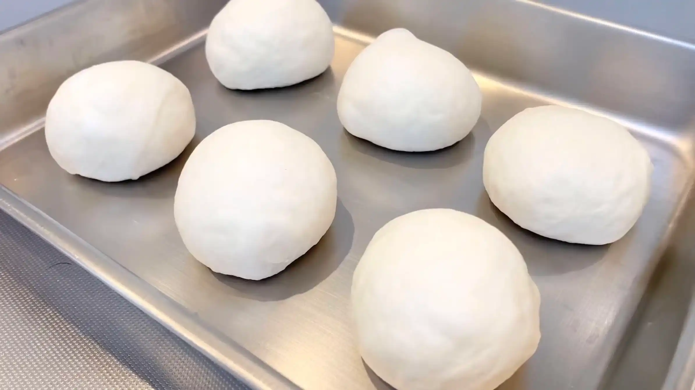
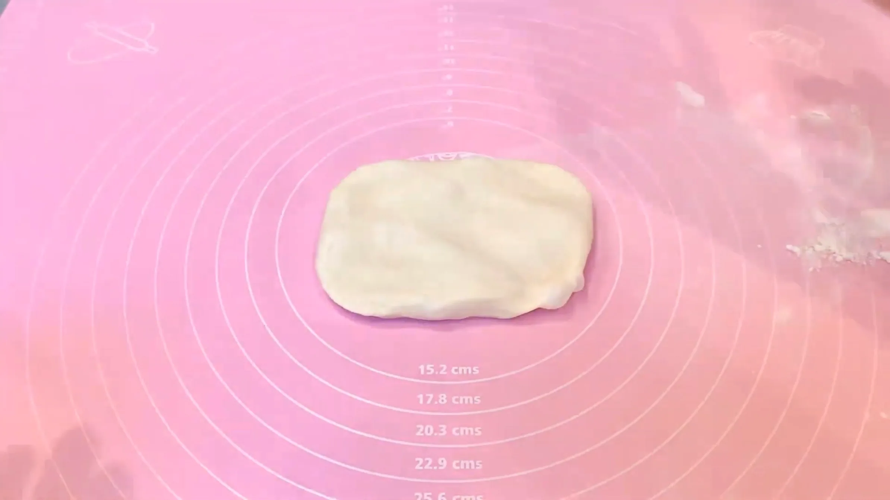
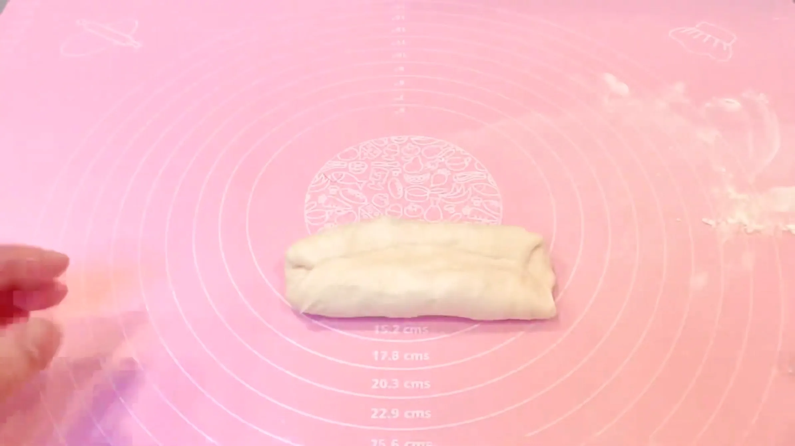
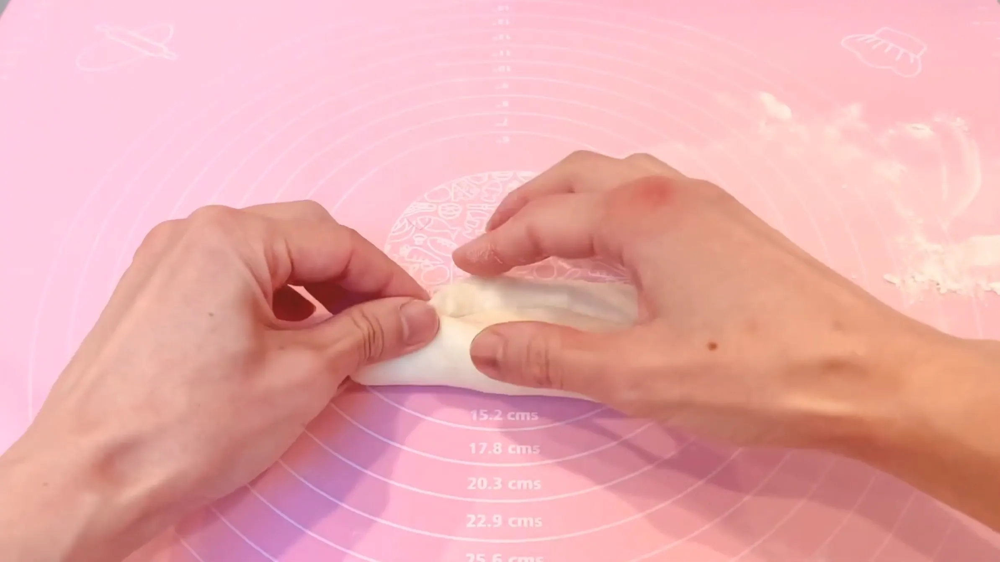
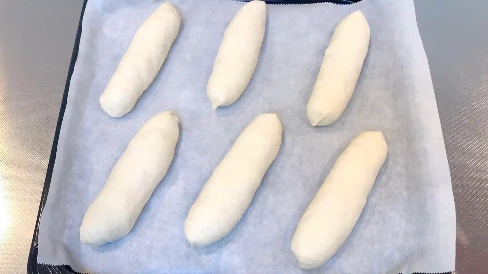
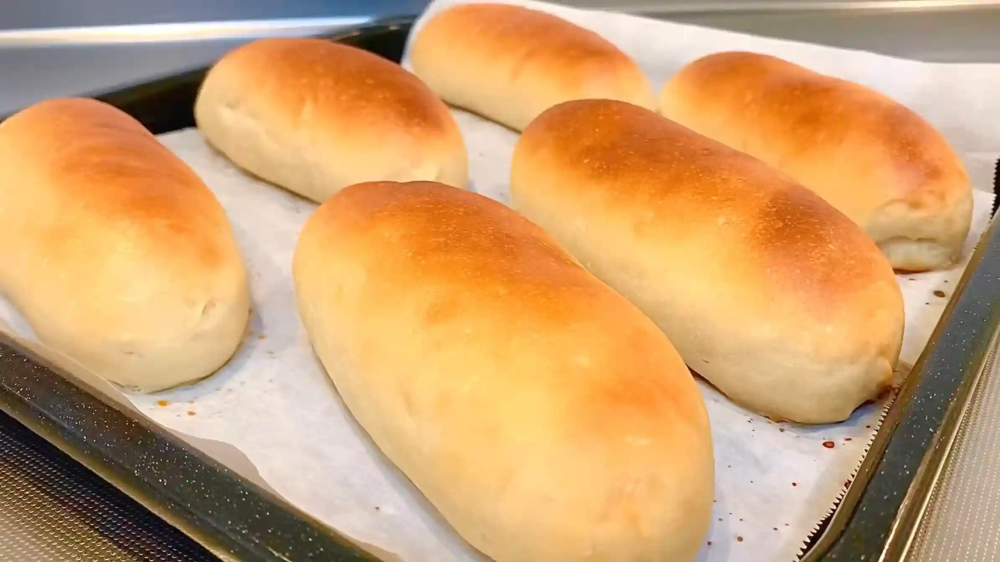
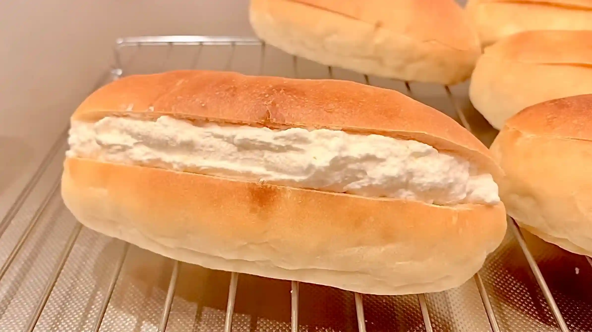
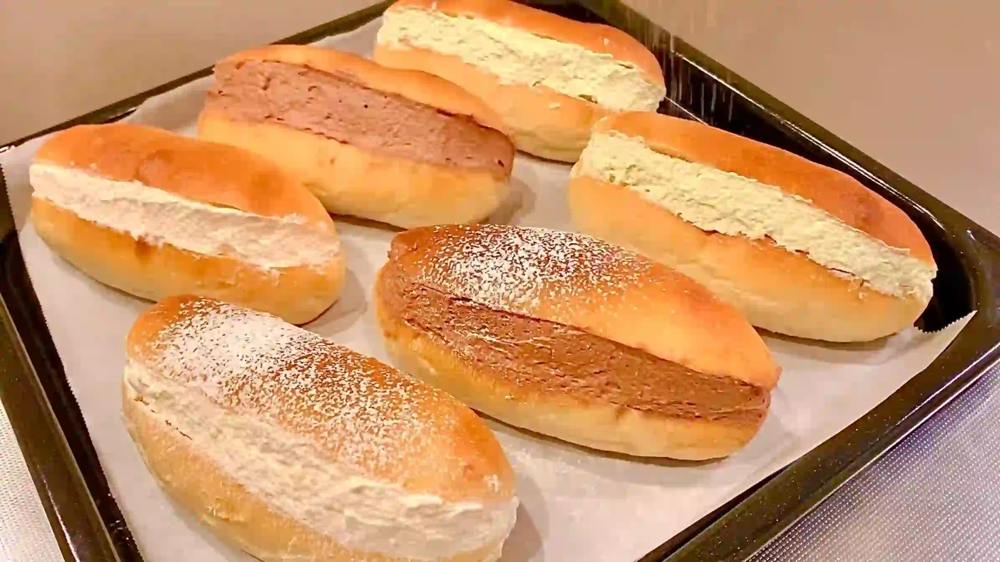

材料 6個分
※粉量を変えると自動計算されます
生地
バタークリーム
仕上げ
作り方
バタークリーム
STEP 1
バターとグラニュー糖を混ぜ、クリーム状にする
バターを柔らかくしてからグラニュー糖と混ぜることで、砂糖がバターになじみ、なめらかなクリームになります。
バターを柔らかくしてからグラニュー糖と混ぜることで、砂糖がバターになじみ、なめらかなクリームになります。
STEP 2
ホイップクリームを泡立て、バタークリームと合わせる
ホイップクリームをしっかり泡立ててからバタークリームと合わせることで、バターのコクがありながら、ふんわり軽い口当たりのクリームに仕上がります。
ホイップクリームをしっかり泡立ててからバタークリームと合わせることで、バターのコクがありながら、ふんわり軽い口当たりのクリームに仕上がります。

STEP 3
お好みでチョコや抹茶を混ぜる（[動画 06:43]）
クリームを3等分し、プレーン・チョコ・抹茶の3種類のクリームを作ります。出来あがったクリームは絞り袋に入れておきます。
クリームを3等分し、プレーン・チョコ・抹茶の3種類のクリームを作ります。出来あがったクリームは絞り袋に入れておきます。

生地
STEP 1
ホームベーカリーで生地を作る
ホームベーカリーに材料をセットして「生地コース」を選べば、生地作りから一次発酵までお任せできます。コースが終わったら、次の作業に進みます。
ホームベーカリーに材料をセットして「生地コース」を選べば、生地作りから一次発酵までお任せできます。コースが終わったら、次の作業に進みます。
STEP 2
生地を取り出し6分割して丸め、常温で15分おく
分割した生地を丸めて表面を整え、乾燥しないようにラップをかけます。休ませることで生地がゆるみ、次の工程で伸ばしやすくなります。
分割した生地を丸めて表面を整え、乾燥しないようにラップをかけます。休ませることで生地がゆるみ、次の工程で伸ばしやすくなります。

STEP 3
生地を8㎝×12㎝に伸ばす（[動画 04:15]）
手で軽く押さえながら生地の厚みをそろえて、少しずつ形を整えます。
手で軽く押さえながら生地の厚みをそろえて、少しずつ形を整えます。

STEP 4
生地を折りたたむ（[動画 04:24]）
生地を奥から1/3折りたたみ、手前からも1/3を折りたたみます。
生地を奥から1/3折りたたみ、手前からも1/3を折りたたみます。

STEP 5
生地を棒状に成形する（[動画 04:32]）
生地の表面を張らせるようにしっかり閉じ、15㎝程の棒状に整えます
生地の表面を張らせるようにしっかり閉じ、15㎝程の棒状に整えます

STEP 6
天板に並べ、ラップをして常温で50分おく
生地を休ませ、二次発酵させます。生地がひと回り大きくなり、ふっくらとした状態を目安にします。発酵時間は室温や生地の温度によって変わるため、時間は目安とし、生地の膨らみ具合を確認してください。
生地を休ませ、二次発酵させます。生地がひと回り大きくなり、ふっくらとした状態を目安にします。発酵時間は室温や生地の温度によって変わるため、時間は目安とし、生地の膨らみ具合を確認してください。

STEP 7
表面に牛乳を塗り、予熱なしのオーブン190℃で25分〜30分焼く
予熱なしで焼くことで、生地にゆっくり熱が入り、焼き始めに生地が膨らむ時間を確保しやすくなります。オーブンによって焼き上がりが異なるため、表面の焼き色や生地の状態を見ながら、必要に応じて焼き時間を調整してください。
予熱なしで焼くことで、生地にゆっくり熱が入り、焼き始めに生地が膨らむ時間を確保しやすくなります。オーブンによって焼き上がりが異なるため、表面の焼き色や生地の状態を見ながら、必要に応じて焼き時間を調整してください。

STEP 8
パンが冷めたら切り込みを入れ、クリームを挟む
切れ込みは、真横からではなく斜めから入れると、クリームを詰めた時に断面が表に出て美しく見えます。
切れ込みは、真横からではなく斜めから入れると、クリームを詰めた時に断面が表に出て美しく見えます。

STEP 9
仕上げに砂糖をふる
じゃりパン特有のシャリッとした食感を出すために、詰めたクリームにグラニュー糖を追加でふります。さらに甘さを加えたい場合は、お好みで粉砂糖をかけて仕上げてください。
じゃりパン特有のシャリッとした食感を出すために、詰めたクリームにグラニュー糖を追加でふります。さらに甘さを加えたい場合は、お好みで粉砂糖をかけて仕上げてください。

動画でチェック
おいしく作るためのワンポイントコラム
クリームにも、仕上げにも、グラニュー糖をたっぷり。宮崎のご当地パン『ジャリパン』は、このジャリジャリ食感が主役です。
今回は、シンプルなコッペパンをおうちの天板でくっつけずにふんわりと焼き、プレーン・チョコ・抹茶の3種類のクリームを挟んでいきます。再現するための3つのコツをまとめました。
① 焼成のコツ
型を使わずにコッペパンを一度にたくさん焼こうとすると、焼成時に隣同士がくっついて形が崩れてしまいがちですよね。たくさん焼きたいけれど、天板が小さくてお困りの方も多いのではないでしょうか。今回は粉250gの生地を6分割し、手持ちの30cm×30cmの正方形の天板で交互にずらして配置しています。こうして生地同士の間隔を最大に保つことで、おうちの小さな天板でもくっつけずに綺麗に焼き上げることができます。
② じゃりじゃりクリームのコツ
このパンの主役であるクリームの仕上げ方です。グラニュー糖の量はお好みではありますが、本家のような心地よいジャリジャリ感に近づけるには、記載の分量の3倍くらいたっぷり入れても良いかなと思います。クリームに混ぜる場合も上からのせる場合も、思い切って多めに調整してみるのが、あの病みつきになる食感を再現する秘訣です。
③ トッピングのコツ
焼き上がったパンにクリームをトッピングする際、切れ込みの入れ方ひとつで見栄えがガラッと変わります。本家のように真横にドシンプルに入れるのも素敵ですが、斜めに切れ込みを入れると、横から見たときにクリームが綺麗に見えてお店のようなおしゃれな仕上がりになりますね。マリトッツォ風にアレンジしたり、最後に粉砂糖でお化粧するのも素敵ですね！
中から溢れるクリームとジャリジャリ食感の組み合わせは、素朴で懐かしいおいしさです。グラニュー糖は、思い切って多めに。
今回は、シンプルなコッペパンをおうちの天板でくっつけずにふんわりと焼き、プレーン・チョコ・抹茶の3種類のクリームを挟んでいきます。再現するための3つのコツをまとめました。
① 焼成のコツ
型を使わずにコッペパンを一度にたくさん焼こうとすると、焼成時に隣同士がくっついて形が崩れてしまいがちですよね。たくさん焼きたいけれど、天板が小さくてお困りの方も多いのではないでしょうか。今回は粉250gの生地を6分割し、手持ちの30cm×30cmの正方形の天板で交互にずらして配置しています。こうして生地同士の間隔を最大に保つことで、おうちの小さな天板でもくっつけずに綺麗に焼き上げることができます。
② じゃりじゃりクリームのコツ
このパンの主役であるクリームの仕上げ方です。グラニュー糖の量はお好みではありますが、本家のような心地よいジャリジャリ感に近づけるには、記載の分量の3倍くらいたっぷり入れても良いかなと思います。クリームに混ぜる場合も上からのせる場合も、思い切って多めに調整してみるのが、あの病みつきになる食感を再現する秘訣です。
③ トッピングのコツ
焼き上がったパンにクリームをトッピングする際、切れ込みの入れ方ひとつで見栄えがガラッと変わります。本家のように真横にドシンプルに入れるのも素敵ですが、斜めに切れ込みを入れると、横から見たときにクリームが綺麗に見えてお店のようなおしゃれな仕上がりになりますね。マリトッツォ風にアレンジしたり、最後に粉砂糖でお化粧するのも素敵ですね！
中から溢れるクリームとジャリジャリ食感の組み合わせは、素朴で懐かしいおいしさです。グラニュー糖は、思い切って多めに。


ご当地の味を再現！たっぷりクリームとグラニュー糖のジャリジャリ食感が楽しい『宮崎のジャリパン』のレシピです。ふんわりシンプルなコッペパンに、お好みのジャリジャリクリームを挟んだ誰もがワクワクする仕上がりに。コラムでは「焼成のコツ」「じゃりじゃりクリームのコツ」「トッピングのコツ」の3つのコツをご紹介します。